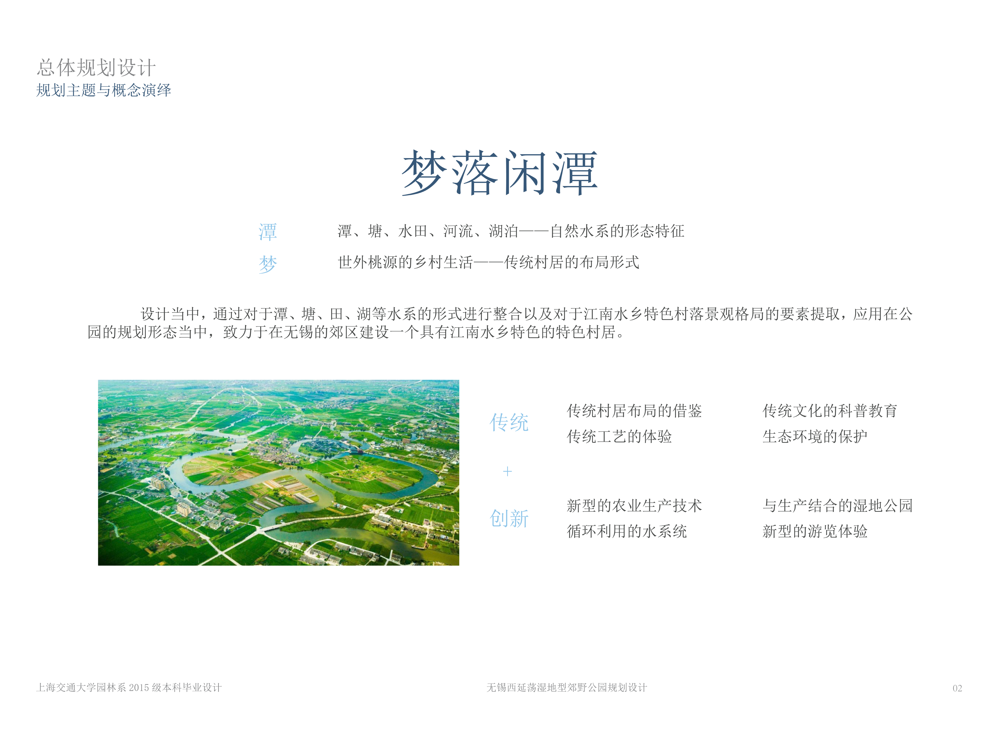

[ADVISOR] Yun Wang, SJTU(Shanghai JiaoTong University) School of Design
[Personal Work] Urban design, landscape design, water experience design
The site locates in rural area of Wuxi, far from city center but with great nature conditions. The area is currently serving as farming site of aquatic products.
To make the development of the are more sustainable, the are need further planning and more interactive activities to attract more tourists for local tourism development. Also, the
local natural conditions have great opportunity to create closer experience to nature for local residents and provide them with a different rural experience.
The overall plan partly continues the characteristics of Jiangnan Water Village.
In the design, the integration of the forms of different water system types and the extraction of elements of the landscape pattern of the characteristic villages in the Jiangnan water town.
Applied in the layout planning of the park, the characteristic village residence is recreated.

The base locates in Houqiao Town, Wuxi and surrounded by rural transportation. It is well connected to other areas and have great transporting condition.
The design is trying to create an multi-functioning wetland park including fish farming, ecological reservation and tourism.
The site can be divided into different areas base on functions. Each area have specific main function.
The functions include more quiet areas like Resting and meditation area in the woods and more active areas such as lawn area.
Also, more interactive experiencing area like producing areas. The main road full of changes in height difference also provides tourists with a more varied tour experience.
The Wetland Art District is chosen as the area to do more detailed zoning design.
The master plan of the area is shown on the right and the roaming video will be shown below.